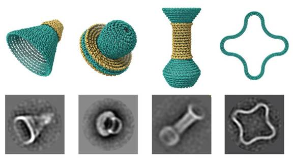
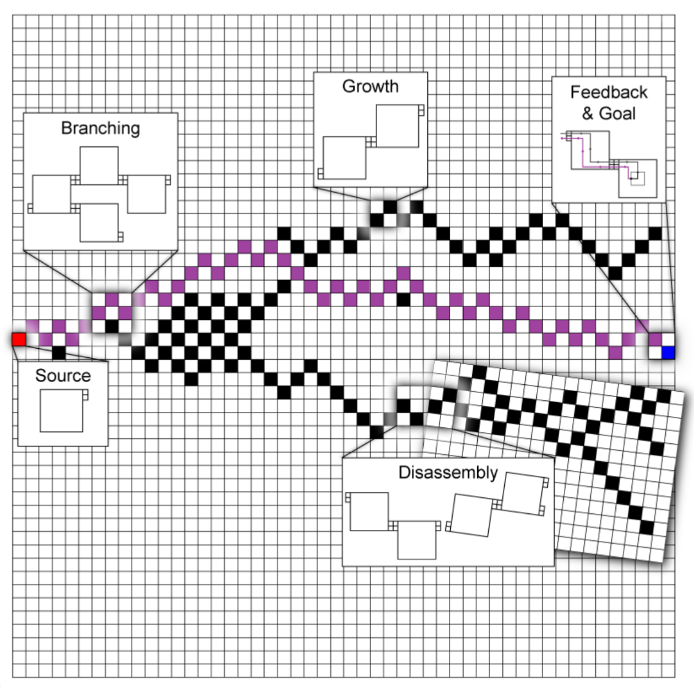
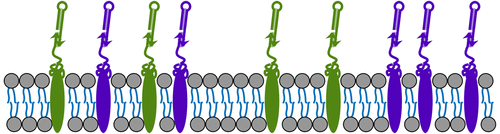

DNAxiS is a computational tool for generating design sequences for rotational DNA origami nanostructures.
You can find it kindly hosted by the Duke University Computer Science Department, here: caddna.cs.duke.edu
It can also be run on your local machine and the source is available on GitHub: https://github.com/dfu99/dnaxis
Our paper on this work was published in Science Advances: DOI: 10.1126/sciadv.ade4455.

The Branching Signal-passing Tile Assembly Model (Y-STAM) is a model of branching self-assembly processes evaluated using DNA tile assembly as a substrate. It is currently presented as a simulator implemented in MATLAB.
Source is available on GitHub: [temporarily unavailable]
A new manuscript submission is in progress. Please await future updates.

The Reif lab continues to explore applications of localized hairpin-based HCR circuits [1]. We have previously published work on using our architecture for cancer cell detection in JACS: DOI: 10.1021/jacs.9b05598.
A new manuscript submission is in progress. Please await future updates.